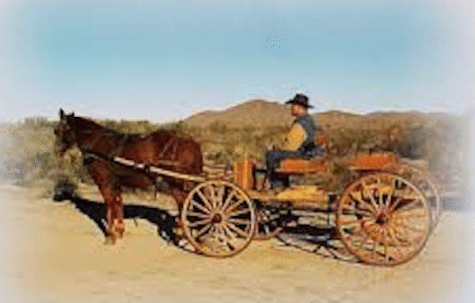

-1-MasterItem.svg)
Stories of Westminster United Church & its People / Page
25
(district so new none to begot for the 100 miles beyond), tea, sugar ,and
provisions, water-proofs;
P. [Pitblado] had a small valise, ten pounds, only baggage to Prince Albert; B.
[Bryce] had left all-
including sermons — but about two pounds at Emerson. Start for the west made; six miles gone;
expected to meet McCrea, a missionary, but he had left two hours before,
despairing of our coming
and gone home some seven miles north of trail. The trail spoken of is the road
we are to follow. It is
better known as the commission trail and runs along
the United States boundary to Rocky Mountains; seven
o’clock; heavy pouring rain; bad prospect for tomorrow;
get to Stevens’ stopping place; horse put up; ready for
supper; kitchen leaking piteously; no fire in front rooms;
chilly; people turn out to be Methodists; hold worship;
sleep under rafters; dry enough but rain pouring all
night; fortunately roof keeps all out; P. dispirited…”
Charles’ frustration is understandable. For
transportation on their long journey through the
Canadian frontier, the pair had only a buckboard
— an open carriage drawn by up to two horses — that
was not just ill suited for rain, but underpowered. Their horse Frank may have
been “ready for
anything,” but he was only one and surely would’ve had a tough go hauling two men and their
belongings in the sweltering summer heat and rain down out-of-the-way trails
steeped with puddles,
manure, and wet mud. For when Frank kicked or “bucked” his hind feet — which inevitably he would
have on occasion — the board at the front of the wagon protected the men. Charles and his travel-
mate were insulated from the rain by the waterproof jackets they wore, but that
was no substitute
for the cover they sorely lacked over their heads. We can imagine that
travelling in the steady rain
would have been miserable. As the duo would have discovered, weather on the
Canadian prairies
during late August and September, when they undertook the Prince Albert Mission,
is especially
capricious: turning abruptly from oppressive heat to near freezing rainfall.
Not a holiday on anybody’s bucket list!

Rev. Charles Bruce Pitblado